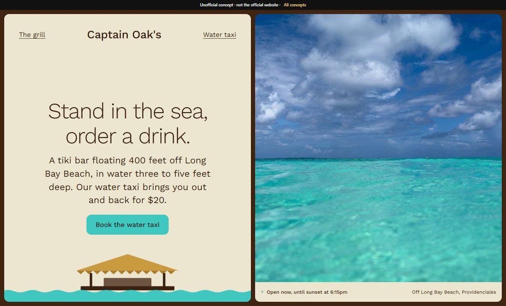
Floating tiki bar · Long Bay, Providenciales
Captain Oak's
A bar 400 feet out in water you can stand in: the page shows the sea at the hour you visit, a menu sheet floating on the shallows and the way out by water taxi.
- Set your height and see where the sea comes up to you at low and high water
- Open now and today's real sunset time, since the bar closes at sunset
- Book the $20 water taxi on WhatsApp, and real ratings with review buttons
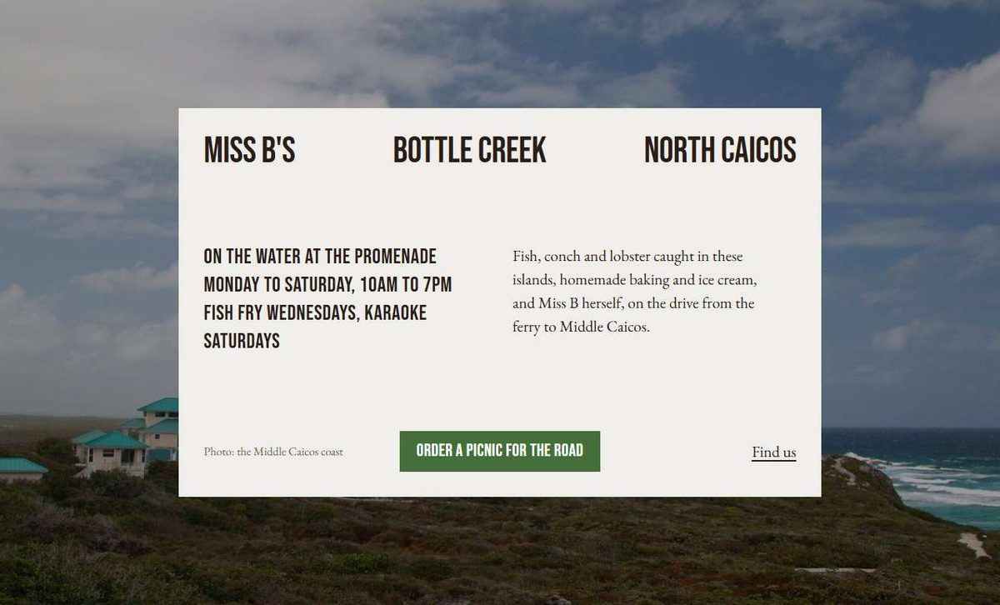
Island restaurant · North Caicos
Miss B's
The page is the paper you carry on a day across North and Middle Caicos: a day-trip card, a printed menu sheet, an itinerary slip and a postcard home.
- A real map where the car drives from the ferry to Mudjin as you read the day
- Pack a picnic to go and email it ahead with a pickup time
- The next fish fry and karaoke night by date, and real ratings with review buttons
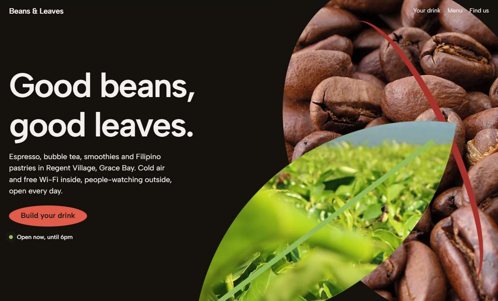
Coffee & tea · Regent Village
Beans & Leaves
A coffee bean and a tea leaf are the same shape cut two ways, so that one shape runs the page: the buttons, the photo masks, the bullets and the latte art.
- Build your drink and see your name written on the cup, barista codes and all
- The full menu, from ube ensaymada to fresh sushi
- Real ratings and published quotes, with review buttons
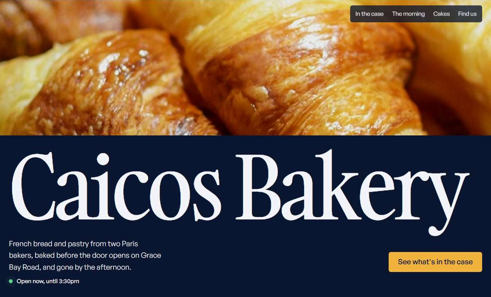
French bakery · Grace Bay Road
Caicos Bakery
Two Paris bakers on Grace Bay Road. The page is a dark room before the door opens, with the pastries lit like a shop case and the blue and green of a Paris street plaque.
- Pick your arrival time and watch the case empty through the morning
- The full case, from almond croissants to quiche and bread
- Real ratings and published quotes, with review buttons

Jerk, BBQ & Chinese · Leeward Highway
Chinson's Grill Shack
Two kitchens in one shack: drag the line between the jerk smoke and the wok fire, and the whole page flips from charcoal and ember to jade and gold.
- Build your plate, drawn as you pick, on a plate or in a box to go
- Open-now sign in Turks and Caicos time, and a real map
- Real ratings and published quotes, with review buttons
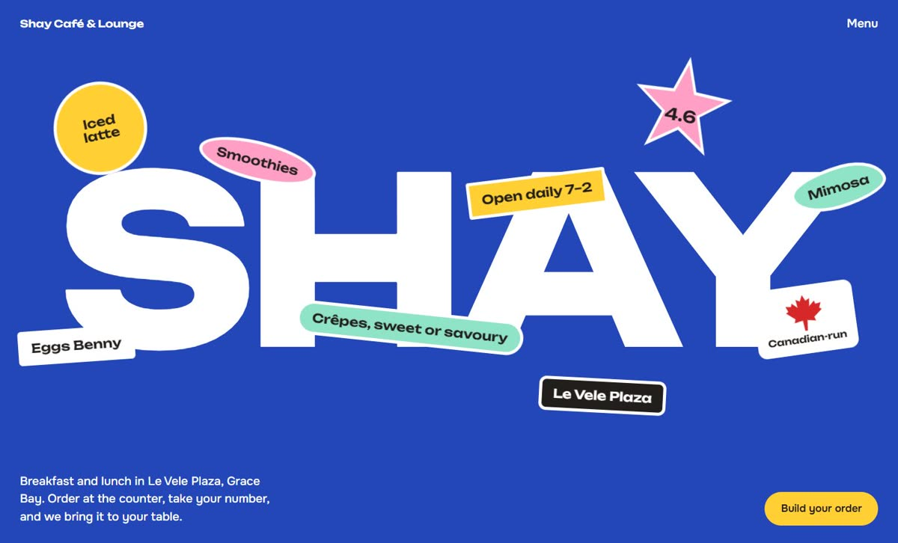
Breakfast café · Le Vele Plaza, Grace Bay
Shay Café & Lounge
Shay's walls are covered in guests' stickers, so the name is the wall: cobalt like the courtyard chairs, with stickers you can peel and move.
- Tap the menu to build a numbered ticket, like the one at the counter
- Real Google reviews, and buttons to leave one on Google or Tripadvisor
- Address set in big display rows: one tap to call or get directions
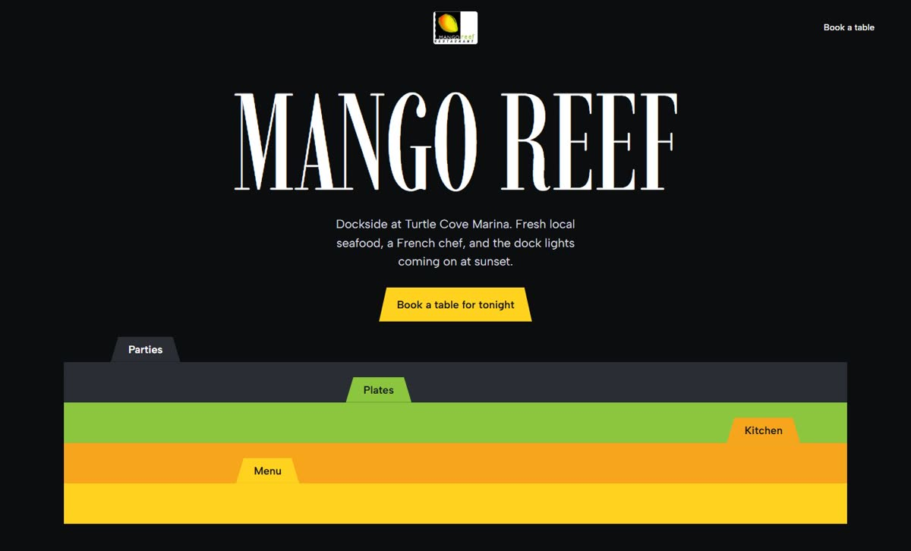
Dockside restaurant · Turtle Cove Marina
Mango Reef
The page is their own yellow-framed menu, stacked like tabbed folders on the dark marina, with the full 2025 menu and prices.
- Tonight's real sunset time and a countdown, Turtle Cove time
- Slide from lunch to the dock lights coming on, then request that table
- Point at a dish to see it; pick three homemade ice-cream scoops
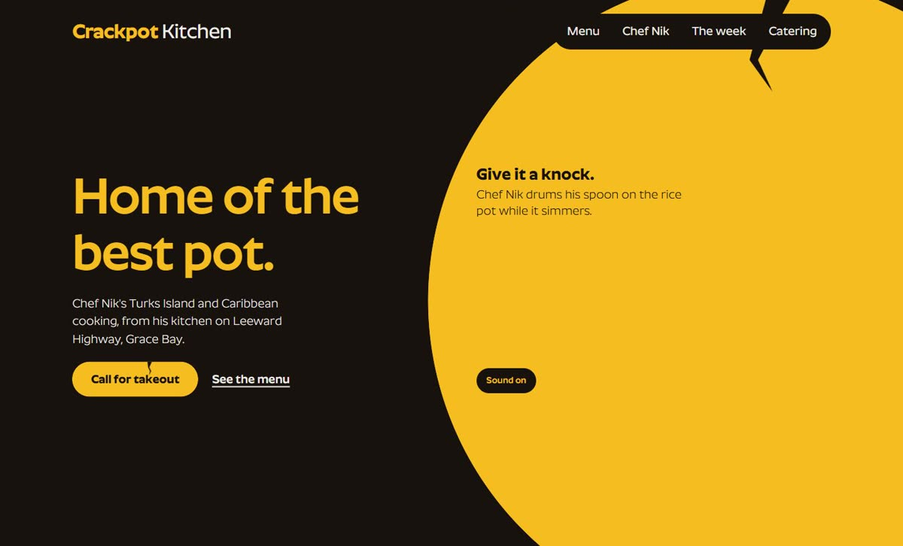
Turks Island & Caribbean food · Grace Bay
Crackpot Kitchen
Chef Nik's cracked pot runs the whole page: the hero you knock on, the mask on every plate, the button, the band and the footer.
- Knock the pot six times: the okra and rice fills it, then it cracks
- The week as colour tiles, with today and open now in TCI time
- A catering coupon that writes the email to Chef Nik
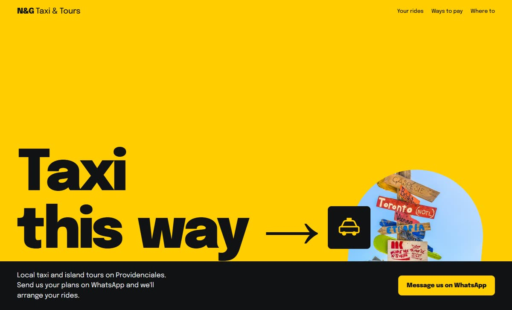
Taxi & island tours · Providenciales
N&G Taxi and Tours
A local taxi dressed as an airport: wayfinding yellow, a departures board for your rides, and the three ways to pay as boarding gates.
- Tap your rides and watch them flip onto the board
- Suggests per ride, flat rate or planned travel for your trip
- Sends the whole itinerary on WhatsApp
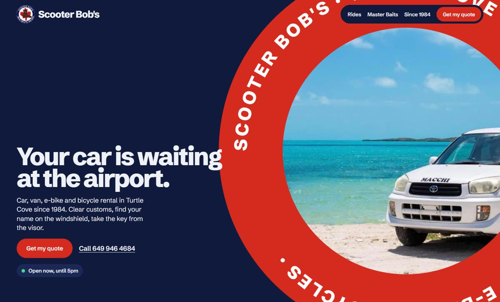
Car, van & bike rental · Turtle Cove · since 1984
Scooter Bob's
The round Scooter Bob's badge runs the whole page, and your family name appears on the windshield of the car waiting for you at the airport.
- Real rates for 15 rides, with tax, licensing and cover worked out
- Pick a ride and the photo swaps inside the badge
- Master Baits, the tackle shop inside the office
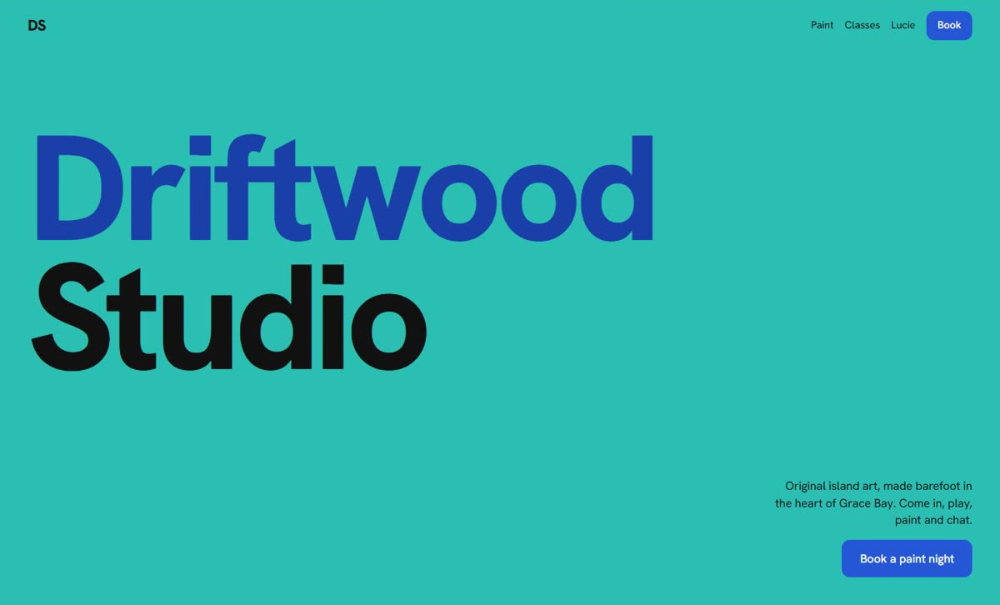
Art studio & gallery · Grace Bay
Driftwood Studio
Every section is dipped in a colour from the studio's own walls and canvases, and visitors can pick up a brush and paint right on the page.
- A canvas you paint with your finger, with Lucie's flamingo to trace
- Save your painting, signed by the studio
- Book a paint night or kids art camp by email
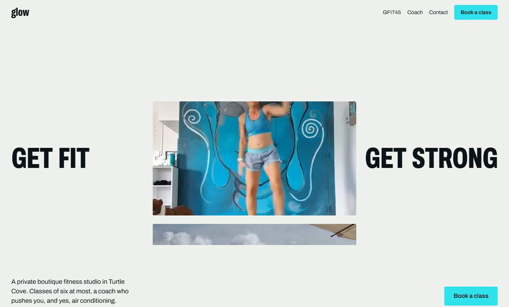
Boutique fitness studio · Turtle Cove
Glow Fitness
The studio's own slogan becomes the page: a live GFIT45 interval clock, then the studio's world, run through the middle of "Get fit, get strong" as you scroll.
- Class card planner with the real prices, shows how much you save
- Sends the plan to the coach on WhatsApp
- A 45-minute GFIT45 clock counts down as you read
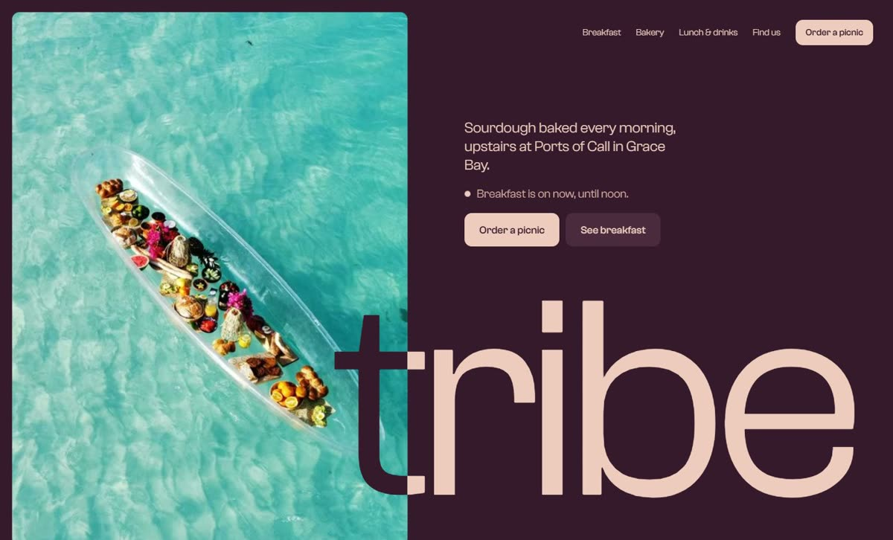
Sourdough bakery & kitchen · Ports of Call
Tribe
Half the screen holds still while you read: the photo changes to each dish as it reaches the middle of the page.
- Their real breakfast menu and prices
- Builds a picnic order for villas and boats and writes the kitchen ticket
- Tells you live if breakfast or lunch is on
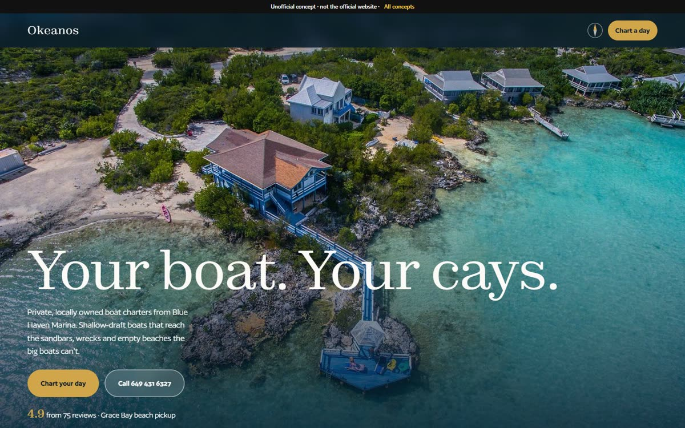
Private boat charters · Blue Haven Marina
Okeanos Charters
Design your day in three taps and a postcard of it prints itself. Tap it to flip it and read the plan, written by hand.
- Real stops, from the sandbars to the wrecks, by charter length
- Suggests the right boat for who's coming
- Emails the postcard to the crew to book
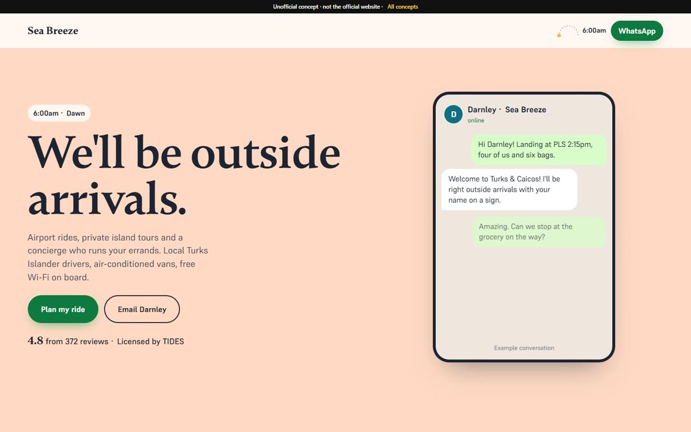
Taxi, tours & concierge · Providenciales
Sea Breeze Taxi & Tours
A whole island day: the sky changes from dawn to starry night as you scroll.
- A WhatsApp chat that types itself in the hero
- Sun and clock crossing the bar, 6am to 11pm
- Ride builder that writes the WhatsApp message for you
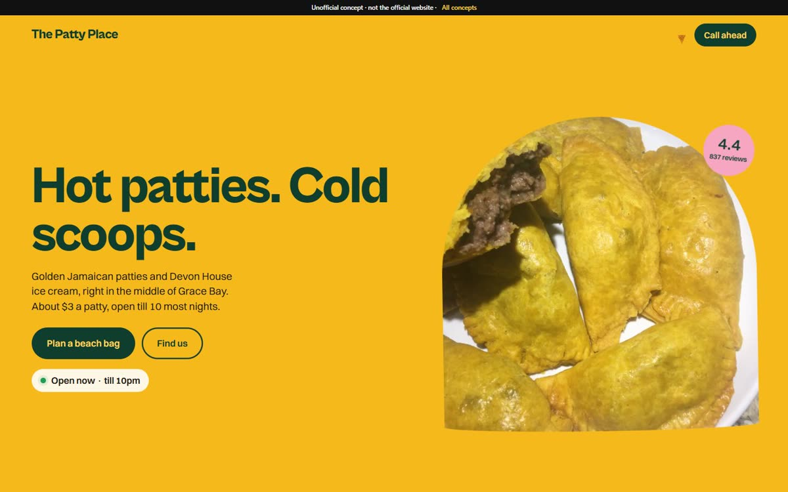
Patties & ice cream · Grace Bay
The Patty Place
837 reviews and no website, until now. Gold, pink and fun, made for phones.
- An ice-cream cone that stacks scoops as you scroll
- Beach-bag calculator: how many patties for your group
- Live open-now status with tonight's closing time
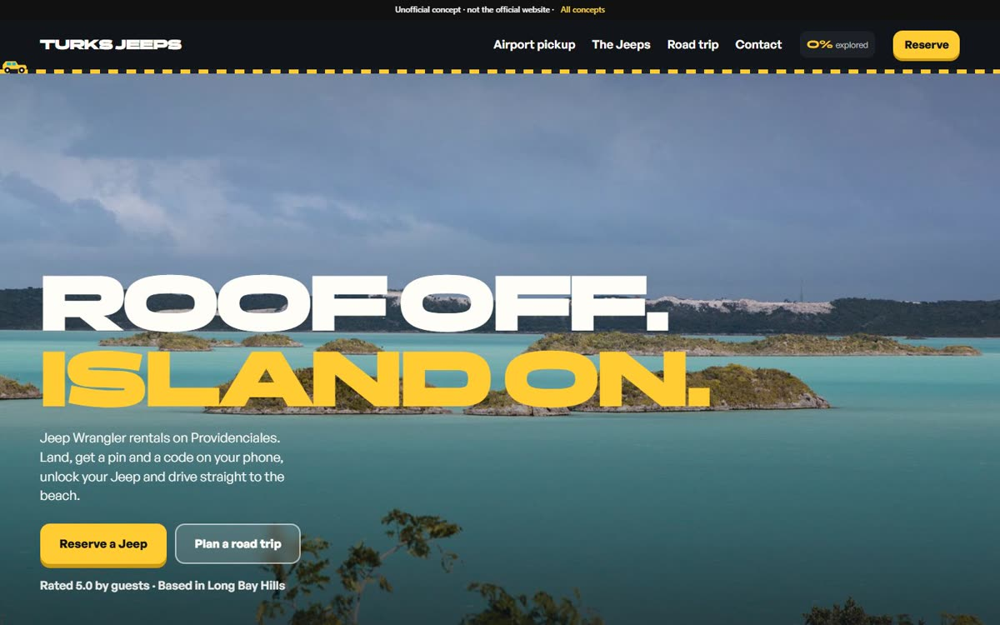
Jeep rentals · Long Bay Hills
Turks Jeeps
Contactless airport pickup, front and centre, plus a road-trip planner for the island.
- A Jeep that drives across the screen as you scroll
- Pick beaches, get a timed day plan with lunch
- Keeps their own online reservation system
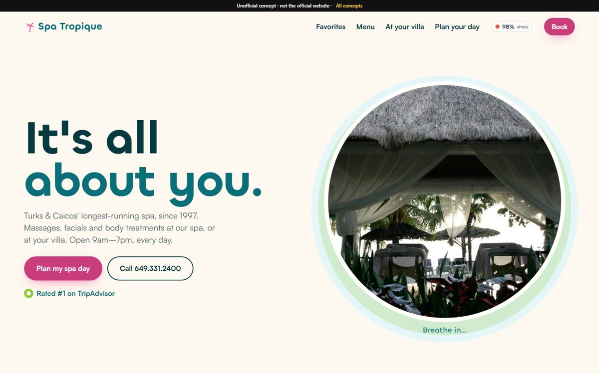
Spa & mobile spa · Providenciales
Spa Tropique
Built phone-first: their real menu and prices, and a spa-day planner that adds it all up.
- A stress meter that drops as you scroll
- Spa-day planner with villa outcall and 12% tax
- Swipeable fan favourites and full menu tabs
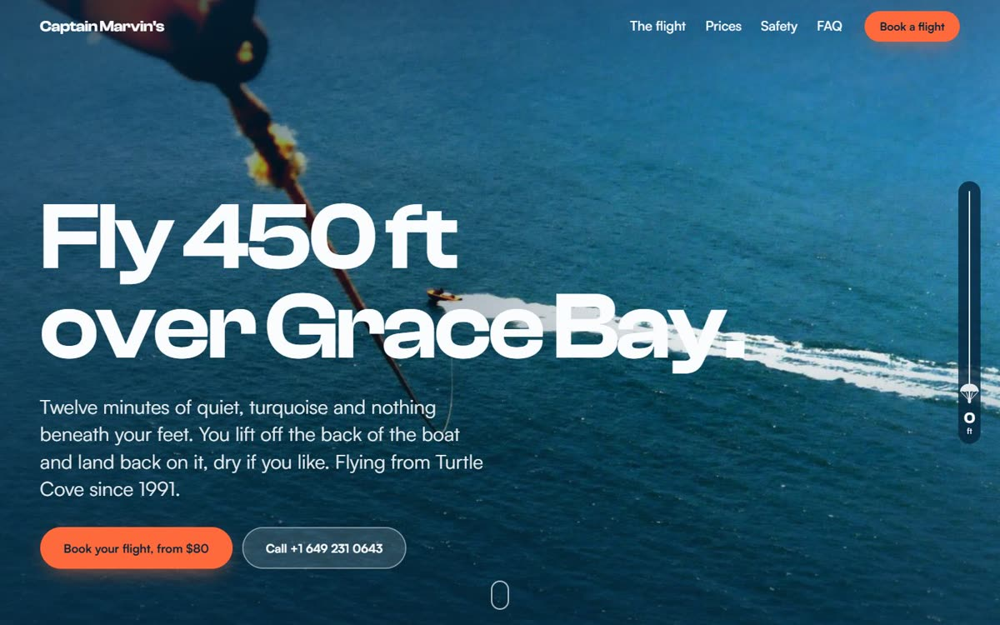
Parasailing · Turtle Cove
Captain Marvin's Watersports
The page is the flight: scroll from the beach up to 450 ft over Grace Bay.
- Live altimeter that climbs as you scroll
- Flight builder with instant price and tax
- Mobile booking bar always one tap away
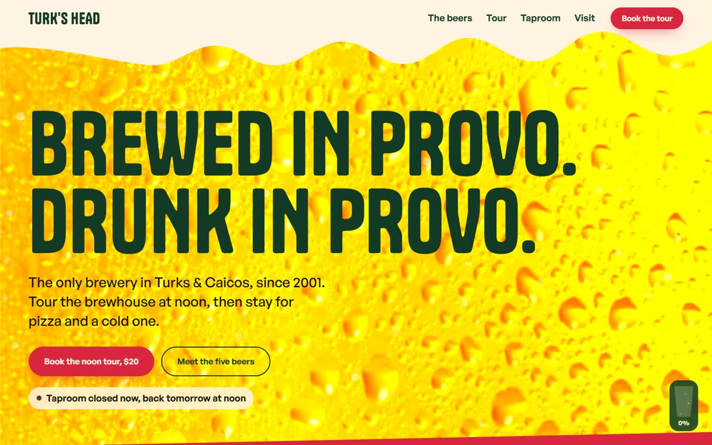
Brewery & Taproom · Discovery Bay
Turk's Head Brewery
Five beers named after island sayings, each with its own colour and full screen.
- A pint that fills as you scroll
- "Which Turk's Head are you?" quiz
- Live happy hour and next-tour countdown
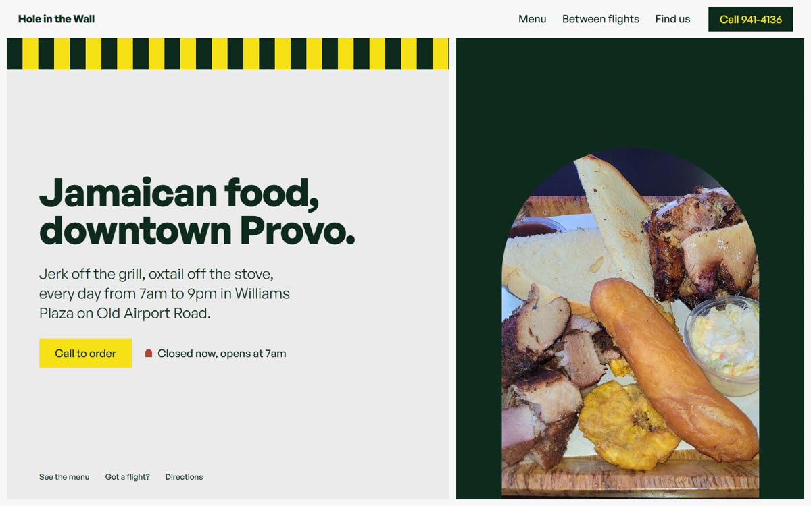
Jamaican kitchen · Downtown Provo
Hole in the Wall
The name becomes the design: every photo seen through a hole in the wall.
- Layover calculator for flights out of PLS
- Open-now status on island time
- Order-ahead ticket by text message